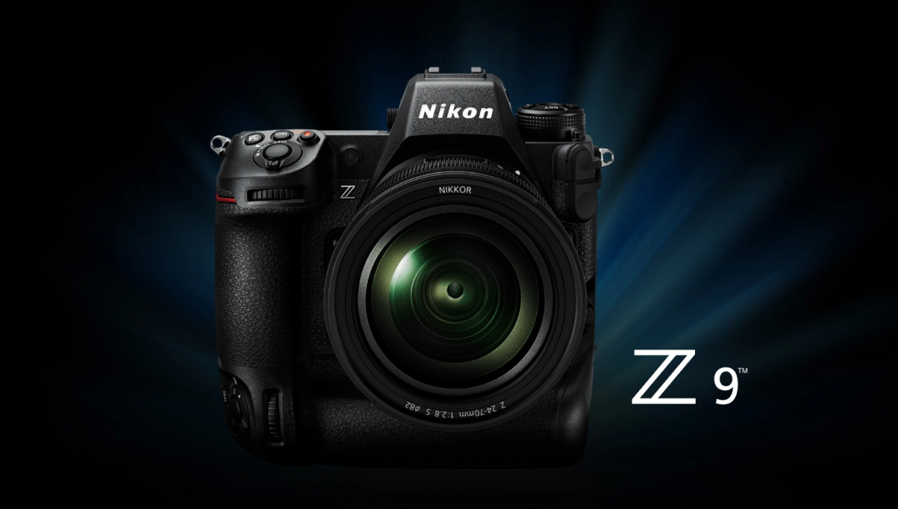

DigiNews
DigiNews
تمامی حقوق این سایت برای دیجی نیوز محفوظ است. نقل مطالب با ذکر منبع بلامانع است.
copy Right© 2022 DigiNews News Agancy, All rights reserved

نیکون از دوربین فول فریم بدون آینه Z9 با قیمت ۵۵۰۰ دلار رونمایی کرد
نیکون رسما دوربین بدون آینه فول فریم پرچمدارش را با نام Z9 معرفی کرد. این دوربین به سنسور ۴۵.۷ مگاپیکسلی مجهز شده و قادر به ضبط ویدیوهای 8K با سرعت ۳۰ فریم بر ثانیه است، ...
نیکون رسما دوربین بدون آینه فول فریم پرچمدارش را با نام Z9 معرفی کرد. این دوربین به سنسور ۴۵.۷ مگاپیکسلی مجهز شده و قادر به ضبط ویدیوهای 8K با سرعت ۳۰ فریم بر ثانیه است، البته همانطور که میتوان حدس زد با دوربین ارزانقیمتی روبهرو نیستیم. بدنه نیکون Z9 قیمتی برابر ۵۵۰۰ دلار دارد.
سرعت تصویربرداری RAW این دوربین ۲۰ فریم بر ثانیه است و اولین دوربین نیکون با یک سنسور مجهز به مموری است که امکان خواندن بسیار سریع دیتا را فراهم میکند. نیکون به اندازهای به شاتر الکترونیکیاش اعتماد دارد که شاتر مکانیکی را بطور کامل رها کرده است و Z9 اولین دوربین حرفهای بدون چنین قابلیتی به حساب میآید.
سنسور پرسرعت به Z9 اجازه میدهد که در ۱/۲۰۰ام ثانیه فلش را همگامسازی کند که سریعترین سرعت همگامسازی برای یک شاتر الکترونیکی محسوب میشود. این سنسور امکان عکاسی JPEG با سرعت ۳۰ فریم بر ثانیه یا RAW با سرعت ۲۰ فریم بر ثانیه را فراهم میکند. اگر رزولوشن را به ۱۱ فریم بر ثانیه کاهش دهید، سرعت به ۱۲۰ فریم بر ثانیه میرسد.
نیکون با استفاده از سنسورش توانسته بافر را بطور چشمگیری افزایش دهد و امکان ثبت ۱۰۰۰ فریم به صورت همزمان در فرمتهای JPEG یا HE RAW را در اختیار خریداران قرار میدهد.
سیستم فوکوس خودکار نیکون هم جدید است و استفاده گستردهای از الگوریتمهای هوش مصنوعی دارد. این سیستم میتواند اشیاء مختلفی از چشم و چهره گرفته تا حیوانات خانگی، هواپیما و دوچرخه را ردیابی کند. با قرارگیری فوکوس روی حالت خودکار، بطور خودکار صحنه را برای فوکوس تشخیص میدهد.
نیکون سیستم لرزشگیر درون بدنه را هم بهبود داده که سیستم «کاهش لرزش» یا VR نام دارد. در دوربین جدید، VR سیستم تثبیتکننده درون بدنه و لنزها را ترکیب میکند تا ویدیوها لرزش کمتری داشته باشند و تصاویر هم کمتر تار شوند. در ابتدا برای استفاده از این سیستم تنها به چندین لنز دسترسی دارید که شامل Nikkor Z 70-200m F/2.8 و Z 100-400mm F4.5/5.6 VR S میشود.
در بخش فیلمبرداری امکان ضبط ویدیو با رزولوشن 8K و سرعت ۳۰ فریم بر ثانیه وجود دارد و البته میتوانید ویدیوهای 4K با سرعت ۳۰ فریم بر ثانیه هم بگیرید. نیکون اعلام کرده در آینده با یک آپدیت فریمور، فرمت ویدیو جدید N-RAW را منتشر میکند که امکان فیلمبرداری ۱۲ بیتی با رزولوشن 8K و سرعت ۶۰ فریم بر ثانیه را ممکن میکند.
DigiNews
DigiNews
تمامی حقوق این سایت برای دیجی نیوز محفوظ است. نقل مطالب با ذکر منبع بلامانع است.
copy Right© 2022 DigiNews News Agancy, All rights reserved